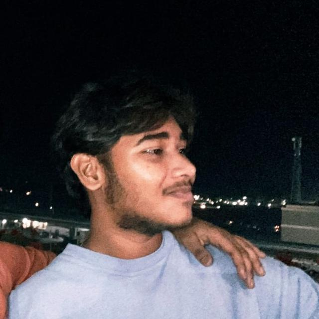

GOATED HUMOUR
At least according to the highly unbiased source: me.
I'm Shivanand. I build projects for fun, chase research rabbit holes, live on Fedora, and occasionally try to make my brain cooperate.

This is the face behind the commits.
Professional enough for a portfolio. Chaotic enough to still be me.
images/profile.jpg. No code changes needed.Still figuring it out. That's kind of the point.
Things didn't go exactly as planned. Good. It forced me to rethink what I actually wanted.
Started exploring CSE, AI/ML, labs, clubs and far too many ideas at once.
Research and building started becoming more serious than just “let's make a project.”
Deep-learning, image forensics, open source, Linux and trying to become frighteningly consistent.
Chill guy. Questionable sleep schedule. Goated sense of humour. Brain running 37 tabs.
I do projects because I genuinely enjoy making things. I want to get deeper into research, especially around AI/ML, computer vision and image forensics. I use Fedora, I like tinkering with Linux, and yes — configuring Hyprland is currently somewhere on the list.
I can be wildly inconsistent, overthink simple things, change moods faster than a playlist, and still somehow get obsessed enough with an idea to build it.
Some things don't belong on a resume. These do belong here.
At least according to the highly unbiased source: me.
Ideas, tabs, repositories, music, Linux configs. Everything is somehow related.
Currently obsessed with Fedora and trying to configure Hyprland without breaking the universe.
Code reviews are fine. “Trust me bro” is not.
Chill one minute. Deep philosophical crisis about a CSS margin the next.
If an idea sounds interesting enough, I'm probably going to build a questionable prototype.
Things I built because the idea wouldn't leave me alone.
A deep-learning image-forensics project for detecting hidden information in images using CNN-based approaches.
A research direction focused on detecting AI-generated and steganographically manipulated scientific images.
An experiment in using AI-assisted monitoring and automated recovery workflows for software systems.
Privacy masking, small utilities, prototypes, experiments and random ideas that become repos at 2 AM.
I want to make things worth putting on paper.
My main direction is image forensics and deep learning: understanding how manipulated and AI-generated images can be detected, especially in scientific imagery.
From “what if?” to something you can actually cite.
Research around image steganography detection, model comparison and noise-based forensic features.
Exploring AI-generated and steganographically manipulated scientific imagery with hybrid deep-learning architectures.
The tools that currently live rent-free in my terminal.
LEARNINGDSA · C++ · Linear Algebra · Linux
BUILDINGComputer vision & image-forensics projects
CONFIGURINGFedora → Hyprland
LISTENINGOneRepublic · Brodha V · Telugu film music
TRYING TOBecome consistent instead of collecting unfinished ideas
A portfolio needs a soundtrack. Mine changes with the mood.
Put your own MP3 files inside the music folder. Then rename them to the filenames below — the player will work locally and after deployment.
Let's build something interesting. Or argue about Linux configs.